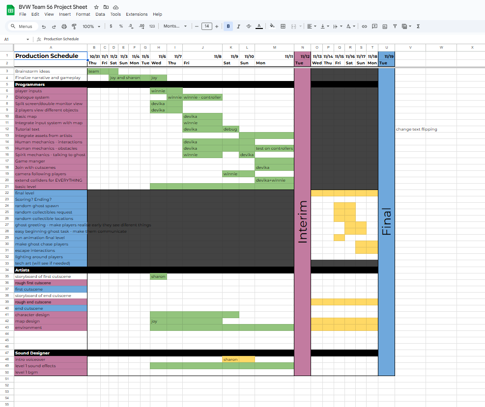
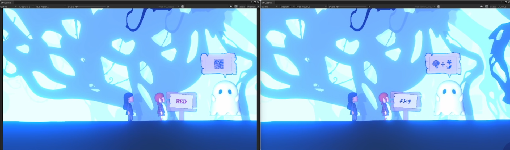

Asymmetric game where two players see different things and must communicate to win the game.
Building a world for the ETC festival, with a focus on maximising throughput and aiming for multiplayer
experiences.
ROLEProducer, Programmer, Technical Artist. UI programmer for interim
round
TIMELINE2 weeks
Game Mechanic
2-player asymmetric game where the human and the forest spirit have different abilities, and
can see and interact with different entities.
The human can move physical obstacles. The spirit can talk to the ghost. The human can read. The players
must communicate to solve the puzzles.
Human Abilities:
- move physical obstacles
- read signs
Spirit Abilities:
- talk to ghosts
- swimming
Platform
Unity Engine, Xbox controllers for each player.
Team
Joy Lim, Sharon Liu, Winnie Tsai
Role 1: Producer
Tasks performed as producer
Leading brainstroming meetings
Maintaining a consolidated meeting notes document
Hosting retrospective meetings at the end of each sprint
Playtesting with peers and collecting feedback from faculty
Running meetings to implement feedback in-game
Scheduling asset production pipelines

Role 2: UI Engineer
Integrating UI into the game: My role involved intergrating this UI into the game, first, with placeholder
assets I had made, and then with
the final artists assets.
Worked on:
overall planning of game UI programming,
setting zones where the UI should appear,
timing of appearance,
orientation of certain UI like dialogue during character movement,
having different UI appear for the human and the fox spirit, and
encouraging conversation between the two players using different UI monologues.
UI appears based on range of player within a region
UI for communication with ghost - player cannot decipher the whole request
Encouraging players to communicate early on (Asymmetric Play - Part 1)
Conversation between characters visible only on their respective screens - makes
players talk to eachother to complete tasks
Alt text: Sprit cannot move the rock. The spirit player sees the "That's too
heavy for me to move." dialogue. The human sees only the "Hmm, maybe I can move this." line. Works as a
standalone line for the human player too.
Quests! (Asymmetric Play - Part 2)
The spirit can talk to the ghost. The human can read. The players
must communicate to solve the puzzles.

Human view and Spirit view
Red(flower + mushroom)!!
Happy ghost - the light bridge opens!
When the task (red flower + red mushroom) is complete, the ghost animation and UI
changes, and the light bridge is now accessible to players.
End of Part One - Cinematic Fade Out
Each player's screen fades to white slowly, after they enter the light bridge and
fall into an abyss.
This was the end of our interim game and was meant to feel complete. We later
added more tasks between the ghost's first request and the final fadeout escape.
Role 3: Shader Technical Artist
A glitch effect shader to respawn the fantasy
character after they fall into a pit.
Our main challenge was audience throughput, and figuring out how to make the experience
accommodate
as many
guests as we can, and still feel interesting to people who have already watched others playing it.
Since we'd decided on making a puzzle game, maintaining the element of surprise was crucial.
Creating a strong asymmetrical game was also challenging.
A lost human and a forest spirit must work together to navigate an enchanted land and serve a ghost's
requests. The two complement eachothers' abilities, and are navigating a winding backstory of long-lost
memories. However, when the ghost's final request is for the human themselves, they find themselves caught in a
deadly chase.
We were tasked to build an experience for the annual ETC festival showcasing students' BVW rounds. The objectives
were to create an experience with a good throughput, that can be enjoyed by multiple players and is a short
experience.
Our world explored a fantasy land and the story of a human and a spirit, both with different abilities in the
world, and who can see and understand different things, navigating a journey of escaping a ghost.
I was a programmer and producer, and also worked as a technical artist, creating trail and glitch
shaders that fit the world, and fade-out effects. I also worked as the UI programmer for the interim round,
setting up the range, placement, and timing of UI elements.